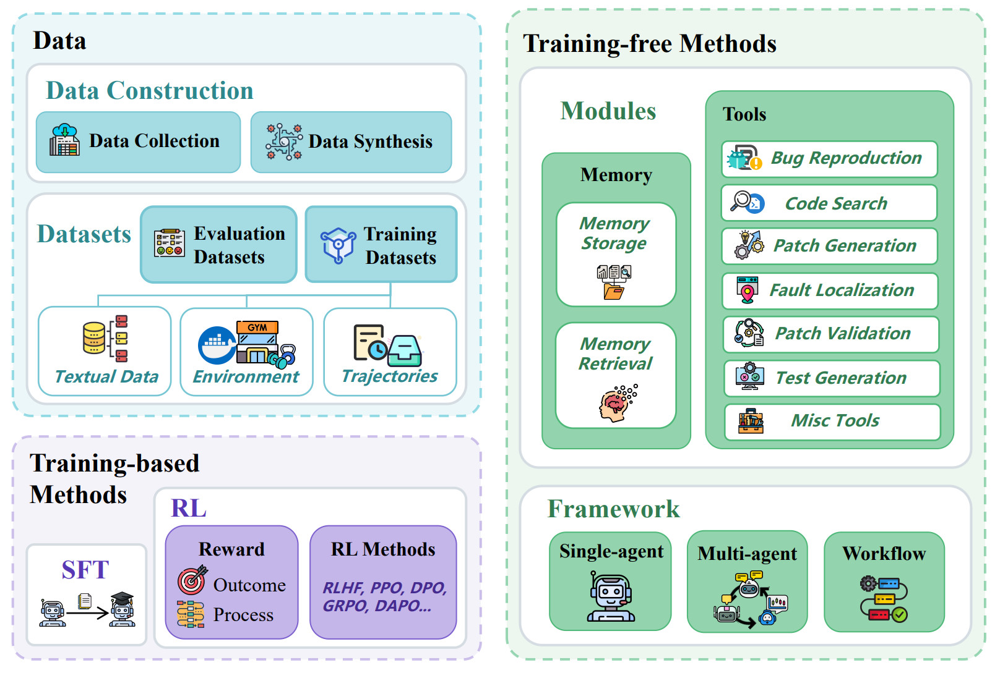

🤖 Awesome Issue Resolution¶
A curated list of papers, frameworks, and datasets concerning the use of Large Language Models (LLMs) in tackling Software Engineering Tasks, specifically focusing on Issue Resolution.
📄 Abstract¶
Issue Resolution, a complex Software Engineering (SWE) task integral to real-world development, has garnered substantial interest within artificial intelligence. Notably, the establishment of benchmarks like SWE-bench revealed this task as profoundly difficult for Large Language Models (LLMs), which has catalyzed a new research frontier focused on building sophisticated agents. In this paper, we systematically investigate this emerging domain, summarizing the rapidly growing ecosystem of data, methods and analysis through a meticulous taxonomy that offers novel perspectives. Moreover, we delve into the current frontiers and delineate the key challenges and future directions, thereby shedding light on future research. Furthermore, we engage in a discussion about open problems and critical analyses. We hope this paper serves as an introduction for researchers and fosters future research in this domain.
🗺️ Overview¶
This compilation systematically organizes and categorizes recent advancements in the field of LLM-based Issue Resolution within Software Engineering Tasks (SWE Tasks). The works are structured into three main research areas: Data, Methods, and Analysis, based on the corresponding papers featured in the taxonomy. Through this comprehensive survey, we aim to provide researchers with a clear understanding of the current state-of-the-art, emerging trends, and future research directions in this rapidly evolving domain.

🛠️ Methods¶
This section highlights the different techniques and frameworks proposed for resolving SWE tasks, categorized into Training-free Methods and Training-based Methods.
🧑💻 Training-free Methods¶
These approaches generally focus on designing effective Agent Frameworks or Modules (such as tools and memory) to maximize the LLM's reasoning capability without extensive model fine-tuning.
Frameworks¶
Frameworks typically define the overall structure for how agents interact with the environment and execute tasks.
- Single-Agent
- SWE-Agent: Agent computer interfaces enable reliable evaluation of large language models on repository-level code changes.
- PatchPilot: A cost-efficient software engineering agent.
- LCLM: Putting context in context: Simplifying agents with limited context.
- DGM: Darwin Godel machine: An open-ended developmental machine for software engineering.
- SE-Agent: SE-agent: Self-evolution trajectory optimization for large language model powered software engineering agents.
- Live-SWE-agent: Live-SWE-agent: The evolution of self-evolving agents for software engineering.
Frameworks¶
Frameworks typically define the overall structure for how agents interact with the environment and execute tasks.
- Single-Agent
- SWE-Agent: Agent computer interfaces enable reliable evaluation of large language models on repository-level code changes.
- PatchPilot: A cost-efficient software engineering agent.
- LCLM: Putting context in context: Simplifying agents with limited context.
- DGM: Darwin Godel machine: An open-ended developmental machine for software engineering.
- SE-Agent: SE-agent: Self-evolution trajectory optimization for large language model powered software engineering agents.
-
Live-SWE-agent: Live-SWE-agent: The evolution of self-evolving agents for software engineering.
-
Multi-Agent
- MAGIS: An LLM-based multi-agent framework for automatic issue resolution.
- AutoCodeRover: Autonomous program improvement.
- CodeR: Issue resolving multi-agent framework for automated software engineering.
- OpenHands: Open hands: An open platform for AI-native software engineering.
- OrcaLoca: OrcaLoca: An LLM-agent framework for accurate issue localization and bug fixing in large codebases.
- DEI: Diversity empowers intelligence: Integrating LLM agent for automated software engineering.
- MarsCode Agent: An AI-native automated software engineering agent.
- SWE-Search: SWE-search: Enhancing software agents with web search capabilities.
- CodeCoR: CodeCoR: LLM-based self-reflective multi-agent framework for software issue resolution.
- Agent KB: Leveraging cross-domain knowledge graphs for software issue resolution.
- SWE-Debate: SWE-Debate: A competitive multi-agent debate framework for software engineering tasks.
- SWE-Exp: SWE-Exp: An experience-driven software issue resolution agent.
- Trae Agent: An LLM-based agent for real-world software issue resolution.
-
Meta-RAG: Meta-RAG for large codebases using structural code retrieval.
-
Workflow
- Agentless: Agentless: Demystifying LLM-based software engineering.
- SynFix: Improving verifiable bug fixing by syntax-guided patch generation.
- CodeV: CodeV: Towards multimodal understanding and reasoning for software engineering.
- Seeing is Fixing: Seeing is fixing: Cross-modal reasoning for bug resolution in software engineering.
Modules¶
Core components used to enhance the capabilities of agents within a framework.
- Tool
- (Includes various frameworks and standalone tools, see original mind map for full list of papers)
- Alibaba LingmaAgent: Improving automated software engineering with an agent-based framework.
- SpecRover: Code intent extraction and transformation for bug fixing.
- RepoGraph: RepoGraph: Enhancing AI software engineers with repository-level knowledge graphs.
- CoSIL: Issue localization in LLM-driven iterative bug fixing.
- SWERank: Software issue localization using large language models.
-
TestPrune: Old meets new: Evaluating the effectiveness of test pruning for large language models.
-
Memory
- Infant Agent: Infant agent: Tool-integrated logic-driven planning for complex software tasks.
- EvoCoder: LLMs as continuous learners: Improving code generation through self-feedback and experience replay.
- ExpeRepair: ExpeRepair: Dual-memory enhanced LLM-based software repair.
- commit history-based memory: Improving code localization for repository-level bug fixing using commit history-based memory.
-
ReasoningBank: ReasoningBank: Scaling agent self-evolving in the wild.
-
Inference-time Scaling
- SWE-Search: SWE-search: Enhancing software agents with web search capabilities.
- CodeMonkeys: CodeMonkeys: Scaling test-time compute to 2x for a 13% improvement on SWE-Bench.
- SWE-PRM: Agents astray: Course correcting SWE agents with process reward models.
🧠 Training-based Methods¶
Focuses on adapting LLMs to SWE tasks through model training and fine-tuning on specific datasets.
- SFT-based Methods (Supervised Fine-Tuning)
- Lingma SWE-GPT: An open development process-centric LLM for software engineering. arXiv
- CodeXEmbed: CodeXEmbed: Code retrieval via representation learning. arXiv
- SWE-Gym: Training software engineering agents with large language models. arXiv
- SoRFT: SoRFT: Issue resolving sub-task oriented finetuning for LLMs. arXiv
- SWE-Dev: SWE-Dev: Building software engineering LLMs. arXiv
- RL-based Methods (Reinforcement Learning)
- SWE-RL: Advancing LLM reasoning in software engineering with reinforcement learning. arXiv
- SEAlign: SEAlign: Alignment training for software engineering agents. arXiv
- Satori-SWE: Evolutionary test-time scaling for software engineering agents. arXiv
- DeepSWE: DeepSWE: Deep learning for software engineering. arXiv
- DAPO: Training long-context multi-turn software engineering agents via domain-aligned policy optimization. arXiv
📂 Data¶
This section lists crucial datasets and data construction methodologies used for evaluating and training Issue Resolution models.
📊 Datasets¶
Evaluation Datasets¶
- SWE-bench: Language models are good at resolving code changes. arXiv
- SWE-bench Lite: A light version of SWE-bench. arXiv
- SWE-bench-java: A GitHub issue resolving benchmark for Java. arXiv
- Visual SWE-bench: Towards multimodal understanding and reasoning for software engineering. arXiv
- SWE-Lancer: Frontier LLMs earn money on GitHub. arXiv
- CodeRAG-bench: A benchmark for evaluating code retrieval-augmented generation. arXiv
- Multi-SWE-bench: A multilingual benchmark for issue resolution. arXiv
- SWE-PolyBench: A multi-language benchmark for repository-level software. arXiv
- SWE-bench Multilingual: Scaling data for software engineering agents. arXiv
- SWE-fficiency: Optimizing language models for software repair efficiency. arXiv
Training Datasets¶
- SWE-bench-train: Training split of the SWE-bench dataset. arXiv GitHub HuggingFace
- SWE-bench-extra: Extra training data for SWE-bench. arXiv GitHub
- Multi-SWE-RL: Training data for multilingual RL. arXiv
- SWE-Synth: Synthesizing verifiable bugfix datasets. arXiv
- SWE-Smith: Scaling data for software engineering agents. arXiv
- SWE-Fixer: Training open-source LLMs for automated bug fixing. arXiv
🧑💻 Training-free Methods¶
Single-Agent¶
- SWE-Agent: Agent computer interfaces enable reliable evaluation of large language models on repository-level code changes. arXiv GitHub
- PatchPilot: A cost-efficient software engineering agent.
- LCLM: Putting context in context: Simplifying agents with limited context.
- DGM: Darwin Godel machine: An open-ended developmental machine for software engineering.
- SE-Agent: Self-evolution trajectory optimization for large language model powered software engineering agents.
- Live-SWE-agent: The evolution of self-evolving agents for software engineering.
Multi-Agent¶
- MAGIS: An LLM-based multi-agent framework for automatic issue resolution.
- AutoCodeRover: Autonomous program improvement.
- CodeR: Issue resolving multi-agent framework for automated software engineering.
- OpenHands: An open platform for AI-native software engineering.
- OrcaLoca: Accurate issue localization and bug fixing in large codebases.
Workflow¶
- Agentless, SynFix, CodeV, Seeing is Fixing.
🧠 Training-based Methods¶
SFT-based Methods¶
- Lingma SWE-GPT • CodeXEmbed • SWE-Gym • SoRFT • SWE-Dev.
RL-based Methods¶
- SWE-RL • SEAlign • Satori-SWE • DeepSWE • DAPO.
📊 Evaluation Datasets¶
- SWE-bench • SWE-bench Lite • SWE-bench-java • Visual SWE-bench
- SWE-Lancer • CodeRAG-bench • Multi-SWE-bench • SWE-PolyBench
- SWE-bench Multilingual • SWE-fficiency
🏗️ Data Construction¶
Data Collection¶
- SWE-rebench • SWE-bench Goes Live! • RepoForge
Data Synthesis¶
- Learn-by-interact • R2E-Gym • SWE-Flow • SWE-Mirror
- SWE-bench Verified: Verified LLM-generated fixes for SWE-Bench. arXiv
- SWE-Bench+: An enhanced coding benchmark. arXiv
- Patch Correctness: Are LLM-generated bug fixes correct? arXiv
- SPICE: Automated SWE-Bench labeling and analysis. arXiv
- Context Retrieval: The importance of reasoning for context retrieval. arXiv
- The Danger of Overthinking: Examining reasoning and action in LLM software agents. arXiv
- Security Analysis: Analyzing security vulnerabilities in AI-generated fixes. arXiv
- SeaView: Software engineering agent evaluation. arXiv
🏗️ Data Construction¶
Covers the tools and methods used to build and expand the datasets.
- Data Collection
- SWE-rebench: An automated pipeline for software engineering task replication. arXiv
- SWE-bench Goes Live!: Continuously collecting and evaluating real-world bugs. arXiv
- RepoForge: Training SOTA fast-thinking LLM agents for complex software tasks. arXiv
- Data Synthesis
- Learn-by-interact: Learning by interacting with the code execution environment. arXiv
- R2E-Gym: A procedural environment for hybrid reinforcement learning in software engineering. arXiv
- SWE-Flow: Synthesizing software engineering tasks for training agents. arXiv
- SWE-Mirror: Scaling issue-resolving datasets with agent collaboration. arXiv
🔍 Analysis¶
This section includes research works that provide in-depth analysis and discussion of data, methods, and related phenomena in issue resolution.
- Data Analysis
- SWE-bench Verified: Verified LLM-generated fixes for SWE-Bench. arXiv GitHub HuggingFace
- SWE-Bench+: An enhanced coding benchmark. arXiv GitHub
- Patch Correctness: Are LLM-generated bug fixes correct? arXiv
- SPICE: Automated SWE-Bench labeling and analysis. arXiv
- Methods Analysis
- Context Retrieval: The importance of reasoning for context retrieval. arXiv GitHub
- The Danger of Overthinking: Examining reasoning and action in LLM software agents. arXiv
- Security Analysis: Analyzing security vulnerabilities in AI-generated fixes. arXiv
- SeaView: Software engineering agent evaluation. arXiv